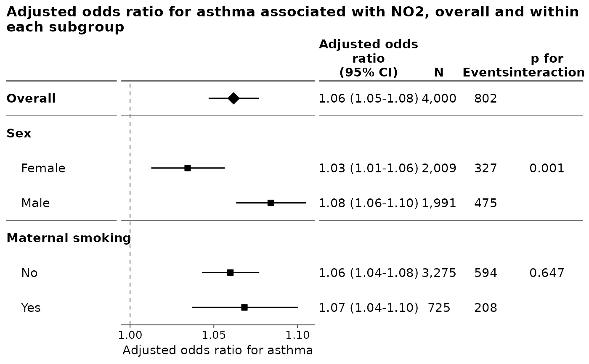
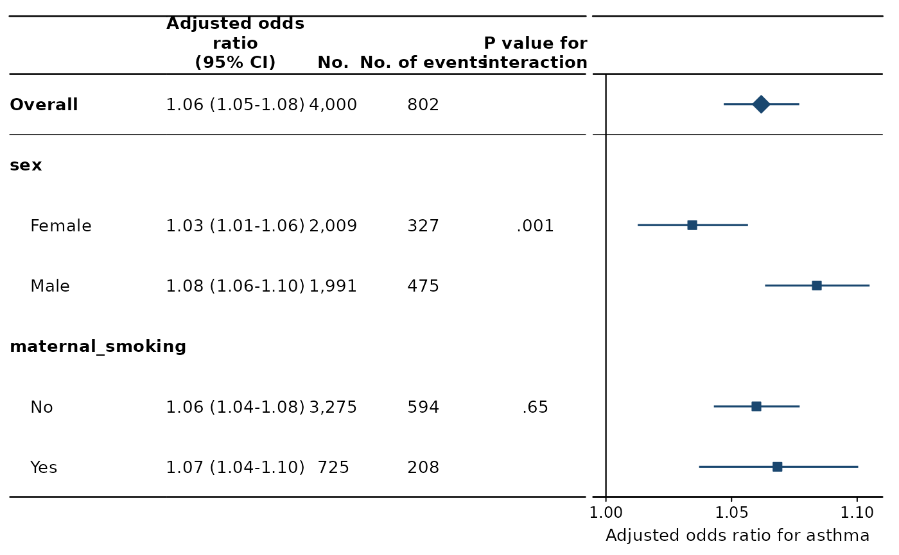
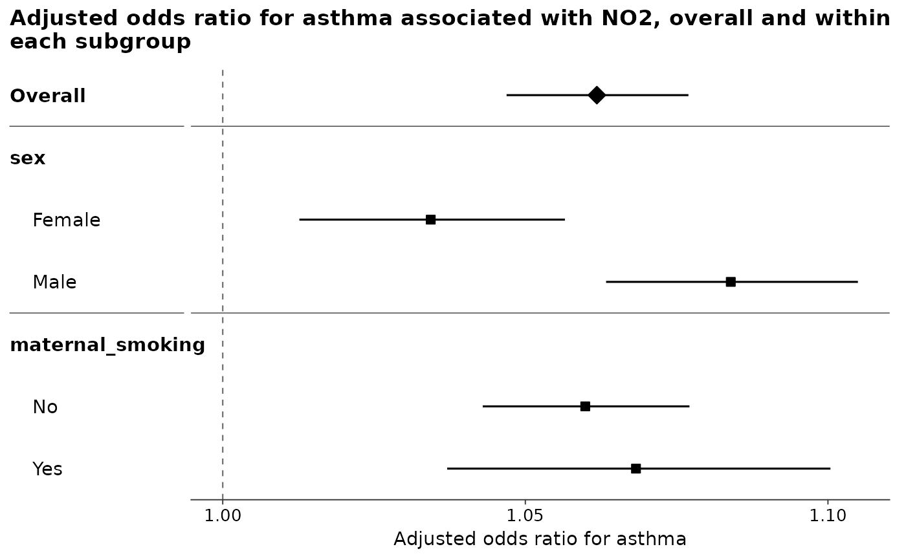
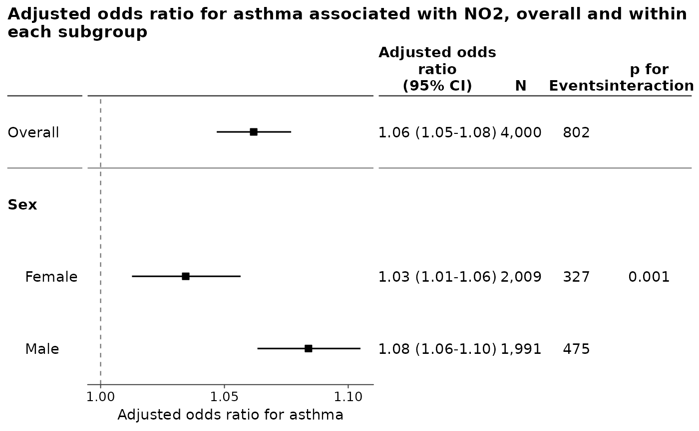
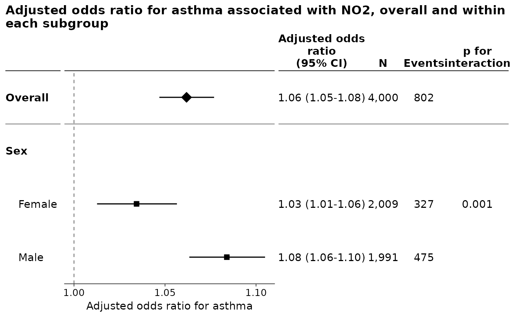

Draws the rows of figures already made – an overall effect from
foresty_main(), the same effect within the levels of sex from
foresty_interaction(), within the levels of ethnicity from another – as
one figure, each of them a block of rows under a heading of its own. This is
the subgroup panel a paper prints: the overall estimate at the top, the
subgroup analyses under it, and the interaction p-value beside each block.
Usage
foresty_combine(
...,
emphasize = "auto",
outcome = NULL,
table = TRUE,
columns = NULL,
person_time = NULL,
layout = NULL,
title = NULL,
subtitle = NULL,
xlab = NULL
)Arguments
- ...
Figures returned by
foresty_main()orforesty_interaction(), in the order they are to be drawn, optionally named.- emphasize
Which blocks are drawn as the figure's summary rather than as another subgroup:
"auto", the default, takes the overall estimates that are a single row;TRUEtakes every overall estimate, a block of several rows included; a character vector names blocks by the names they are drawn under; andNULLorFALSEdraws every block alike. See Singling out the overall estimate.- outcome
What to call the outcome, as
outcome = "incident asthma". The default takes it from the left of the model's formula, which is the name of a column –asthma_ever_dx,evt5– and is rarely what a figure should say the effect is an effect on. It is written wherever the outcome is named: the axis under the plot, the title the package writes for itself, and the HTML report.NAnames none, leaving "Adjusted odds ratio" on its own for a figure whose caption says what of.- table
Whether to draw the table of numbers beside the plot. Defaults to
TRUE, a forest plot being read from the numbers as much as from the marks;table = FALSEleaves a plain figure, andsummary()andtidy()report the same numbers at the console either way.- columns
Which columns the table carries, from
"estimate","p","n","events","person_time","interaction_p"and, where both tests of an interaction were asked for,"interaction_p_lrt". The default shows the estimate and the p-value together with whichever of the others the models can supply. On a figure reporting a test of an interaction the p-value of each row is left off, being easily read as the test beside it; name it incolumnsto have it back.- person_time
The unit person-time is reported in.
NULL, the default, takes whatever the figures being combined were drawn with, since that is a decision already made; a number, or a named number, overrides them all. Seeforesty_main().- layout
How the figure is drawn: the name of a style, as
layout = "jama", or a layout built byforesty_layout()when something about it has to be changed. The styles are"classic","jama","nejm","lancet","bmj"and"revman".- title
Plot title. The default names the measure, the outcome it is a measure of and the exposure the figure reports, as
"Adjusted odds ratio for asthma associated with NO2, overall and within each subgroup". The exposure is named once however many blocks it was drawn under, and with the comparison behind it where that is not the plain one unit –contrast = 10, or two values named byat– since the estimates cannot be read without it.NAdraws none, and the journal styles draw none. A title given by hand is drawn on every figure of a call covering more than one exposure, which is a reason to leave it to the default there.- subtitle
Plot subtitle.
NULL, the default, draws none.- xlab
The label under the plot, which by default names the measure and the outcome, as
"Adjusted odds ratio for asthma". A string is drawn as it was given –xlab = "Odds ratio (95% CI), NO2 per 10 ug/m3"– andNAdraws none. Renaming only the outcome is whatoutcomeis for; this replaces the whole line.
Value
A ggplot2 object, of class foresty, carrying every estimate
drawn on it – or, where the figures combined report more than one
exposure, a list of one such object per exposure, named for them and of
class foresty_figures. See More than one exposure.
Details
Nothing is refitted and nothing is re-estimated. Each figure keeps the
estimates it was drawn from, so a block means exactly what it meant on its
own figure, and the estimates behind the combined one are still reached with
summary(), tidy() and as.data.frame().
The figures have to agree on what they are measuring: the same effect measure and the same confidence level, since the rows are read against one axis. They do not have to come from the same model, and usually will not, each subgroup analysis being its own interaction model.
More than one exposure
Every row of a combined figure is read against the rows above it, and rows reporting the effect of different exposures are not comparable that way, however alike their axes happen to be. So the figures handed in are sorted by the exposure they report and one figure is drawn for each: NO2 overall and within every subgroup on the first, black carbon overall and within every subgroup on the second, each titled with its own exposure.
A call covering one exposure – which is the usual one – returns that
figure. A call covering several returns the figures in a list, named for the
exposures, which draws them one after another when it is printed and holds
foresty figures that are used singly as any other is:
figures <- foresty_combine(Overall = overall, Sex = by_sex)
figures # draws each in turn
figures[["NO2"]] # one of them
ggplot2::ggsave("no2.png", figures[["NO2"]])Naming the blocks
A named argument names its block. An unnamed one is named for itself: a
foresty_interaction() figure by its modifier, a foresty_main() figure
"Overall".
A block holding a single row – the overall estimate, most often – is drawn as one row carrying the block's name, rather than as a heading with a single row indented under it.
Singling out the overall estimate
The overall estimate is not one of the subgroups; it is what the subgroups are read against, and a figure that draws it as another row of the same kind invites a reader to compare it with them as though it were one. It is therefore drawn apart from them: a filled diamond on its interval, half again the size of the squares under it, its label in bold, and a rule between it and the subgroups, drawn whether or not the style rules between subgroups. The interval is a plain line, as every other interval on the figure is, so the whole figure is read the same way and the diamond says which row is the summary.
emphasize says which blocks are drawn that way. "auto", the default,
takes the blocks that came from foresty_main(), which are the ones with no
modifier behind them; a figure of nothing but those has none singled out,
since every row would be. Name blocks to choose them yourself, as
emphasize = c("Overall", "Pooled"), and pass NULL to draw every block
alike. How they are drawn is set in foresty_layout(), through
emphasis_shape, emphasis_height, emphasis_face and emphasis_gap.
Adjusting the figure
The result is a ggplot2 object, so layers, scales and themes are added to
it as usual, and + always reaches the forest:
foresty_main(list(fit), "no2") + ggplot2::coord_cartesian(xlim = c(0.8, 2))
foresty_main(list(fit), "no2") + ggplot2::theme_minimal(base_size = 14)& reaches every panel of a figure that has more than one, which is worth
knowing about but rarely what you want: a scale or a coordinate system
applied to the table of numbers beside the plot will spoil it. Use +.
Examples
fit <- glm(asthma ~ no2 + sex + maternal_smoking + maternal_age,
family = binomial, data = foresty_cohort)
overall <- foresty_main(list(fit), exposure = "no2",
labels = c(no2 = "NO2"))
by_sex <- foresty_interaction(fit, exposure = "no2", interaction = "sex")
by_smoking <- foresty_interaction(fit, exposure = "no2",
interaction = "maternal_smoking")
foresty_combine(Overall = overall, Sex = by_sex,
`Maternal smoking` = by_smoking)

# In the layout of a journal, the interaction p-value written once against
# each block, and without the numbers beside the plot.
foresty_combine(overall, by_sex, by_smoking, layout = "jama")

foresty_combine(overall, by_sex, by_smoking, table = FALSE)

# Every block drawn alike, the overall estimate included.
foresty_combine(Overall = overall, Sex = by_sex, emphasize = NULL)

# Two exposures are two figures, one apiece, named for them.
fit_bc <- glm(asthma ~ black_carbon + sex + maternal_smoking + maternal_age,
family = binomial, data = foresty_cohort)
figures <- foresty_combine(
Overall = foresty_main(list(fit, fit_bc),
exposure = c(NO2 = "no2",
`Black carbon` = "black_carbon")),
Sex = by_sex,
`Black carbon by sex` = foresty_interaction(fit_bc, "black_carbon", "sex")
)
names(figures)
#> [1] "NO2" "Black carbon"
figures[["NO2"]]
